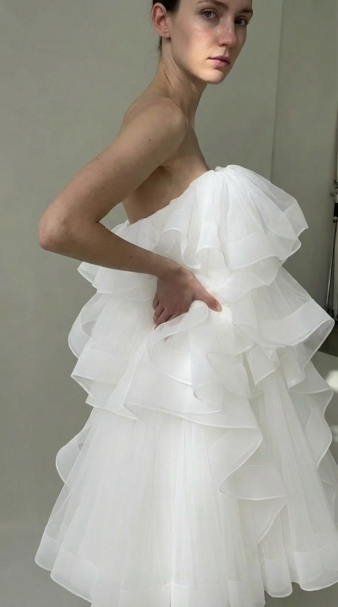
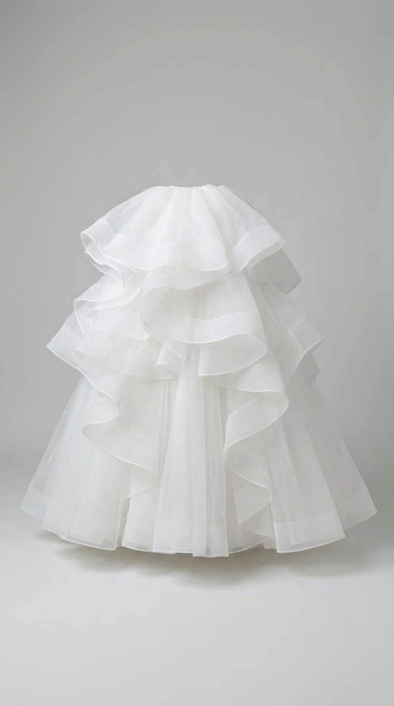

Grandière
La ligne signature de l’agence : des pièces couture qui célèbrent le corps réel, les volumes assumés et l’élégance vécue. Chaque création est portée, habitée, incarnée par nos talents.

Robe Volumée Asymétrique
Tulle structuré, drapés organiques, volumes exigeants. Une pièce qui demande présence et précision dans le geste.
Portée par Karoline Kilgaard
Contacter l’agence

Jupe Tiers Volants
Tulle superposé en étages généreux, construction aérienne et précise. Une exploration des volumes qui reste ancrée dans le mouvement réel du corps.
Collection Grandière
Contacter l’agenceÀ venir – Nouvelles pièces
FW 2025/26
Créations en cours de développement. Suivez nos news pour les découvrir portées par nos talents.
Intéressé·e par Grandière ?
Pour des informations, des essayages, des collaborations ou des commandes sur mesure, l’équipe est à votre disposition.
Nous écrire